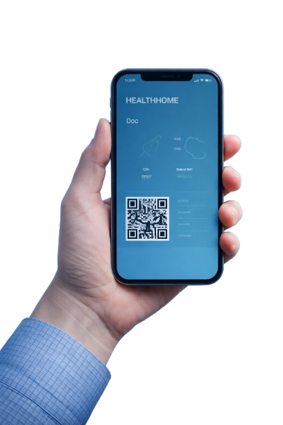
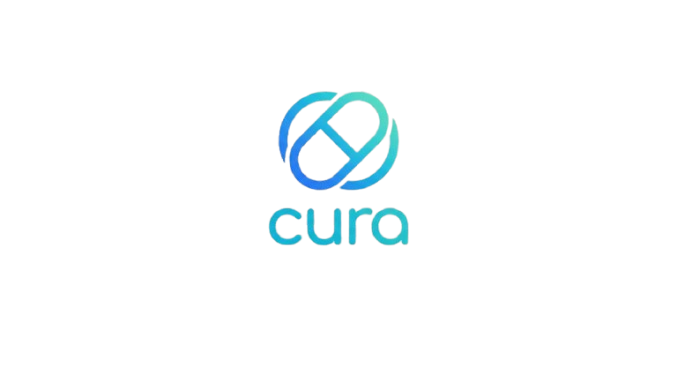
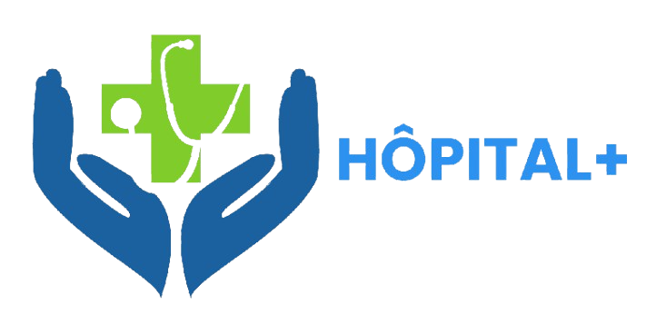
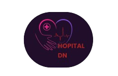

Vos dossiers médicaux, votre soutien en santé mentale et vos consultations en ligne réunis sur une plateforme unique, sécurisée et flexible, conçue pour l'avenir des soins.
Des outils pensés pour les patients et les professionnels de la santé, garantissant une continuité des soins optimale.
Centralisez vos antécédents, vos ordonnances et résultats d'examens en un lieu unique et sécurisé.
Consultez votre médecin où que vous soyez via votre interface vidéo haute définition sécurisée.
Un accès simplifié à des psychologues certifiés pour un accompagnement personnalisé et bienveillant.
Accédez instantanément à votre profil médical via notre technologie QR Code sécurisée. Présentez simplement votre code aux professionnels de santé pour un partage fluide et sans erreur.

HDS Compliance
RGPD Ready
Chiffrement AES-256
Infrastructure Cloud



Rejoingnez des milliers d'utilisateurs qui ont déjà choisi pour une gestion sereine de leur santé.
CRER MON COMPTE GRATUIT